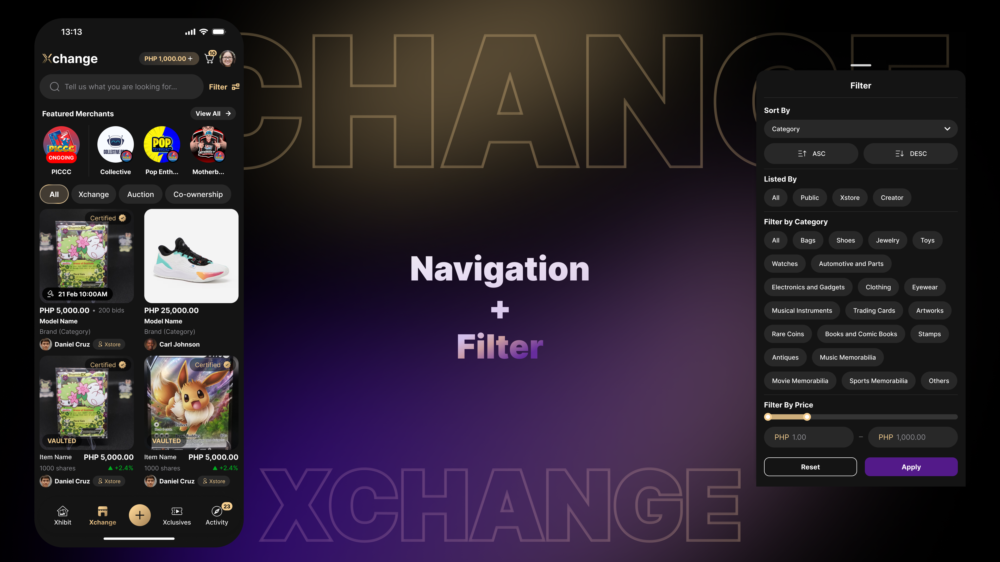

Rethinking the Marketplace Experience
Xchange · Marketplace within the Xure app
Xchange is where Xure users browse and buy — listings from public sellers, Xtore merchants, and creators all live in one marketplace. My work looked at how that marketplace was organized, tried out a direction that added more to the page, and then walked that direction back in favor of something simpler.

Overview
More content does not always mean a better experience
Xchange is Xure's marketplace surface — search, browse, and filters, spanning listings from public sellers, Xtore merchants, and creators. Rather than adding new layers to it, most of the meaningful work in this project came from deciding what to hold back.
This case study is about a decision, not just a deliverable: a section I designed and then chose to remove, and why that removal was the right call for the product.
Context
What Xchange already had
The original Xchange design included quick-access shortcuts for Orders, Bids, and Chats, alongside the search bar, featured merchants, and product listings. The profile icon was positioned beside the cart, while the filter button was placed beside the search bar. Although these elements provided convenient access to important functions, the overall layout placed more emphasis on utilities than on product discovery.

Challenge
Making a crowded marketplace easier to scan
With three distinct seller types and several filter dimensions competing for space, the goal was to make discovery feel more intuitive — improving how quickly someone could find what they were looking for, and how easily a merchant's listings could surface — without adding more surface area for a user to parse before they reach an item.
Goals
What "better" needed to mean here
Improve product discovery without adding visual noise to the browse screen.
Give merchant listings fair visibility inside the existing structure.
Keep search and filtering as the primary, unobstructed path to an item.
Question every addition against whether it earns its place on the screen.
Process & Exploration
Exploring the navigation and hierarchy
I explored different ways to organize marketplace categories, improve filter access, and present co-ownership listings more clearly.
Approach 1: Category Tabs for Easier Navigation

Introduced dedicated tabs for All, Xchange, Auction, and Co-ownership while simplifying the layout to prioritize product discovery.
Approach 2: Improved Filter Accessibility

Moved the filter button beside the category tabs to make filtering easier to find while browsing products.
Approach 3: Dedicated Co-ownership Product Presentation

Added ownership progress indicators to show the shares already owned and those still available at a glance.
Featured Merchants
A section I designed, then removed
All exploration added a Featured Merchants section near the top of Xchange, giving merchants a dedicated, higher-visibility spot in the marketplace. It was a reasonable idea on its own — merchants benefit from visibility, and a curated row is a familiar marketplace pattern.

But placed at the top of the browse screen, it pushed search and the item grid further down and added a section a user had to scroll past before reaching what Xchange is actually for: finding and buying items.
Simplification
Deciding what to take out
Xchange's primary purpose is browsing and discovering items — anything that delays that, even something genuinely useful on its own, works against the core experience.
With Featured Merchants
Adds a dedicated merchant-visibility section above the fold. Helps merchants, but pushes search and browsing down and adds a section to scroll past before reaching items.
Final direction
Removes the standalone section. Merchant listings stay visible through the existing Xtore filter instead, keeping the browse screen focused on search and discovery.
Final Design
The final marketplace direction
Latest Design on App

Filter

The final direction kept Xchange's browsing and filtering structure at the center of the screen and did not carry the Featured Merchants section forward. The exploration itself, and the reasoning for setting it aside, was documented and shared as part of the design process.
Reflection
What I learned
Not every good idea belongs on the same screen as the core task.
Removing something you designed is still a design decision.
Information hierarchy is a series of trade-offs, not just a layout choice.
A simpler screen can serve more people than a more complete one.